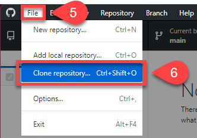
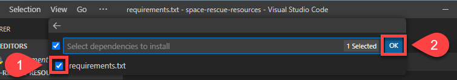
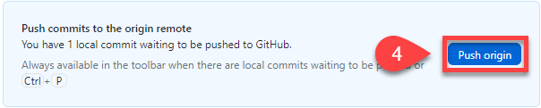

Setup¶
In this lesson you will:
Set up your computer for for the course
Install Python
Setup a version control workflow
Install an Intergrated Development Environment
Install Qt Designer
Download the PyQt bolierplate code
Create a virtual environment
For this course we are going emphasise developing good programming practice. This means using a proper development environment with version control. We will need to install a number of programs and then set our environment to ensure it functions properly.
Reason for workflow
There are many reason behind using the workflow I’m presenting here. Most of them are beyond the scope of this course. Put simply, through experiecne, I have discovered that using this workflow minimises a number of traps that beginners fall into. This means that we can spend more time coding and less time trouble-shooting.
Programming Language - Python¶
The first step is to install Python our programming language. If you have been using educational IDEs like Thonny and Mu, Python normally came packaged with them. This is not normally the case.
Versions
Python has many versions. At the time this site was created, Python 3.11.4 was the latest verion. This won’t be the case for very long, since a new version of Python 3 comes out every year. It doesn’t matter too much for the level we are working, so just go ahead and install the latest one.
The best way to install Python depends on the operating system you are using.
Windows¶
The easiest way to install Python on Windows devices is to use the Microsoft Store. Just search for Python and then select the latest version (at the time of writing it is 3.12). This will install Python as well as keeping it up to date, when patches are released. It also add Python to your computer path, this allows it to be used anywhere on your computer.
Check the installation by running Python.
macOS¶
To install Python for macOS go to the Python website and click the yellow button that says Download Python 3.X.X (where X are numbers). The website will detect your operating system and download the correct file for your computer.
Now install the downloaded file.
Check the installation by running Python.
Version Control¶
Version control is a system that helps keep track of changes made to files or projects over time. It allows you to save different versions of your work and easily switch between them if needed. Think of it as OneDrive but not as automatic. After you save work to your local computer, you will need to explicitly sync it with the cloud version.
While we will only be using the simplest features of version control, this is part of you developing good programming practice.
Git¶
Git is the industry standard distributed version control system. It is a free and open-source tool that helps individuals and teams manage changes to files and projects over time. Git is especially popular among software developers for tracking code changes, but it can be used for any type of file-based project.
Using Git, we will have a special folder for your code. This folder is called a repository (repo). This repo is like a supercharged folder. It will keep track of the changes you make to your code, so you can revert to your previous code. This is really useful if you have made changes that have broken your code.
We won’t be using Git directly, but rather it will be integrated into other software we are using. Never-the-less, we still need to install it.
To install Git:
Go to the Git website and download the Latest source Release.
Run the downloaded installation file
macOS users Choose the Binary Installer
Accept all the defaults for the installation process
GitHub¶
GitHub is the service we will be using to sync our repos to the cloud. We will be using the free version.
Create an account by:
Going to the GitHub website
Choose the Sign up link in the top righthand corner.
Use your College email to create your account (you can change it later)
Git vs GitHub
Git is the underlying version control system that tracks changes to files and manages repositories locally, while GitHub is a web-based platform that hosts Git repositories remotely and provides additional collaboration and project management features. While GitHub is the most popular web-based repository platform, it’s important to note that there are alternative platforms similar to GitHub, such as GitLab and Bitbucket.
GitHub Desktop¶
GitHub Desktop is an application that makes it easier to use GitHub.
To install GitHub Desktop:
Go to the GitHub Desktop website
Click the purple Download button.
Run the downloaded installation file.
macOS: when asked move and restart GitHub desktop
Accept all the default options.
Once it is installed, run GitHub Desktop and sign in using your new GitHub credentials
IDE¶
An Integrated Development Environment (IDE) is a special computer program that helps you write, edit, and test your code more easily. It’s like a digital workspace for programmers. Inside the IDE, you can write your code, see instant suggestions and corrections, organize your files, and run your programs to see the results. It brings together different tools and features that make coding more efficient and productive.
Visual Studio Code¶
Visual Studio Code (VS Code) is the IDE that we will be using for this course.
To install VS Code:
Go to the VS Code website
Click on the Download button
Run the downloaded installation file.
Accept all the default options.
VS Code Extensions¶
VS Code extensions add extra functionality to the program. Below are the extensions that are relevant to these tutorials.
Python Extension¶
VS Code can be used to write any programming language. We need to prepare it for working with Python. We do that by adding the Python extensions.
Click Install
Acknowledge that you have VS Code
You may need to accept the prompt to open VS Code
Qt Designer¶
Qt Designer is a tool for quickly building graphical user interfaces with widgets from the Qt GUI framework. It gives you a simple drag-and-drop interface for laying out components such as buttons, text fields, combo boxes and more.
Download the package for your system
Install package
PyQt Boilerplate Code¶
What is boilerplate code?
Boilerplate code refers to sections of code that are repeated in multiple places with little or no variation, often required to set up a basic structure for a program or framework. It helps establish a standardised starting point, but can sometimes feel redundant as it doesn’t add unique functionality to the application.
We will be using some PyQt boilerplate code from a GitHub repository as a starting point for these tutorials.
To access this code:
Go to the PyQt6 Boilerplate
Click on the green Code button
Click on the copy button beside the https url

Open GitHub Desktop
Open the File menu
Click Clone Repository

Choose the URL tab
Paste repo URL into URL or username/repository box
Click Clone
The repo should now be copied onto your computer and ready for use.
Opening repo in VS Code¶
We’re going to use GitHub Desktop to coordinate our programming. We will use it to:
Open our code in VS Code and set up the workspace correctly
Save (commit) our finished code to our local repo
Sync (Push) our committed code up to GitHub (origin)
Git and GitHub terminology
Git and GitHub uses a range of different terminology. Here are some of the terms we will be using:
Repository or repo: A repository is a special folder that stores all the files and their history for a project.
Commit: When you make changes to files in a repository, a commit is takes a snapshot of those changes. Each commit has a unique name and a message explaining what changes were made.
Pull: Pulling means getting the latest changes made by others and adding them to your own copy of the project.
Push: Pushing is when you share your changes with others by sending them to a central place, like a website or server.
Remote: A remote is a way to connect your local copy of the project with the online version. weare using GitHub. It allows you to share your work and collaborate with others.
Clone: Cloning is making a copy of a project from a remote location to your own computer so you can work on it.
Local: the copy of the repo that is on your computer
Origin: the copy of the repo that is on a remote location
Fork: making your own copy of someone else’s project.
Note: the other that you could be working with might be you on another computer.
To use GitHub Desktop to open VS Code:
Open GitHub Desktop
Make sure the Current repository (top lefthand) is PyQt6-Boiler-Plate
Click Open Visual Studio Code
VS Code should now launch and you file panel of the lefthand side should show all the files in your repo.
Virtual Environment¶
Python virtual environments enables you to designate distinct areas for various Python projects. It’s like having various rooms in your home, each with its unique furnishings and accents. You can work on various projects in a virtual environment without their interfering with one another. Each project gets a special “playground” with its own Python installation and particular libraries. You can easily work on numerous Python projects because everything is kept organised and conflicts between projects are avoided.
requirements.txt
The requirements.txt file lists all the external libraries that we need to install for this project.
You can add extra libraries to this file, but to install them you will need to run the command:
Windows:
pip install -r requirements.txtmacOS:
pip3 install -r requirements.txt
Create Virtual Environment¶
Windows Users
If you are a Windows user, you might need to run a Powershell command before you create a virtual environment for the first time.
To do this:
Open Powershell as Adminstrator
Type the following:
Set-ExecutionPolicy Unrestricted -Forcethen Enter
You shouldn’t need to do this again, unless you get a new computer.
To create a virtual environment for this project:
Press
Ctrl+Shift+P(Windows) /Shift+Command+P(macOS)Type
Pythonat the topChoose
Python: Create Environment...
At the top choose the Venv option
Then choose the latest version of Python that you just installed

Tick the box beside requirements.txt and then ok

VS Code will now:
create your virtual environment
perform any necessary updates
install the libraries in the requirements.txt file
activate your virtual environment
Check Virtual Environment¶
Finally to check that the virtual environment has been setup.
Click the Terminal menu
Choose New Terminal
Open the
main_widow.pyfile and then check the right of the VS Code status bar for3.X.X('venv':venv)
Make first commit and push¶
Change the text in README.md to the text below and then save it:
# PyQt Tutorials
Learning how ot use PyQt to make GUIs
In GitHub desktop write “Made first change” in the Summary (required) box
Then click Commit to main

Click Push origin (you will receive an error)

Choose to Fork this repository
Choose For my own purposes then Continue
Click Push origin again